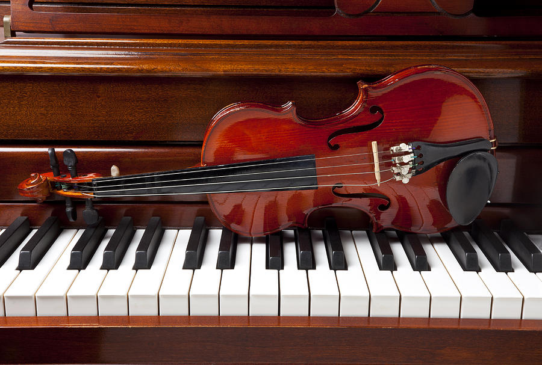

- A Violin/Piano Recital
- Music of the Philippines
- The Wonder of Christmas
- Korean Music
- A Tribute to John Paulson
A Violin/Piano Recital

Guest violinist Helen Chang Haertzen will team up with pianist Horacio Nuguid
to welcome back audiences with a delightful selection of works for violin and piano.
Familiar sonatas by Handel and Mozart will be included in the program as well as well-known
and beloved melodies of Raff, Bernstein, Kreisler and Tchaikovsky.